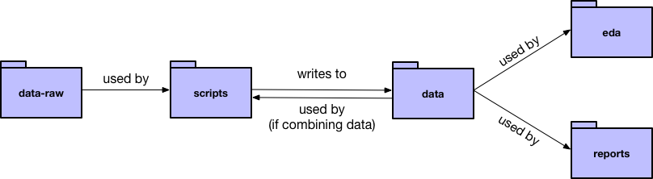

7 Project organization
In this chapter, we’ll talk about how to organize your project. We’ll discuss how to use the project template created by dcl::dcl_data_project(), explain an easier way to handle file paths, and walk you through the creation of a makefile.
7.1 Directories
Here’s an overview of the relationships between the various directories created by dcl::dcl_data_project():

To help explain the different directories, we’ll refer to our project example, which uses data on migratory birds’ collisions with lighted buildings in Chicago.
7.1.1 data-raw
Put all raw data files (i.e., the data that you haven’t touched yet) in data-raw.
For each data file, come up with a short, but descriptive, name. You’ll use these names to name other files. For example, our example data-raw contains the following raw data files:
- birds.txt
- collisions.csv
- light_mp.csv
7.1.2 scripts
Data-manipulation scripts belong in scripts. We’ll talk more about R scripts in the next chapter, but you can also take a look at our example scripts.
Create one script for each raw data source. Each script should read in a raw data file, process it, and then write the cleaned data to an .rds file in data.
Name each script to correspond to the data file it creates. For example, the script collisions.R reads in collisions.csv, cleans the data, then writes collisions.rds to data.
If you want to join multiple data sources, create an additional script that joins the cleaned data files. For example, bird_collisions_light.R joins birds.rds, collisions.rds, and light_mp.rds, and writes to bird_collisions_light.rds. As the diagram points out, your joining scripts can join cleaned data from data.
7.1.3 data
data contains cleaned data (likely in .rds format) that is ready to analyze. The name of each .rds file should correspond to the script that created it. For example:
- collisions.rds
- birds.rds
- light_mp.rds
- bird_collisions_light.rds
7.1.4 docs
The docs folder is for any documentation files you used to understand the data, as well as for any notes you have on the data or your plan for analysis.
7.1.5 eda
The eda folder contains R Markdown files with your exploratory data analysis (EDA) work. As a start, perform EDA on each dataset and name the R Markdown files accordingly. For example, birds.Rmd performs EDA on just birds.rds, bird_collisions_light.Rmd performs EDA on just bird_collisions_light.rds, etc. Once you understand your data, you can perform further EDA studies, each in an R Markdown file with a descriptive name. This separation is intended to help you organize your EDA, which can become unwieldy if placed in a single file.
7.2 File paths
The here package simplifies the work of specifying file paths. The function here::here() allows you to specify a file path relative to the directory of your .Rproj file, no matter what folder you’re in. For example, no matter where you are in your project, you can give the file path of collisions.rds as here::here("data/collisions.rds").
See the our scripts, EDA documents, and reports for more examples.
7.3 R Markdown template
The dcl package also contains a R Markdown template to use for your EDA files and reports. To use the template:
- Click on the new file button in the top-left corner of RStudio.
- Select R Markdown… > From Template > DCL GitHub Document.
Our template is similar to the default GitHub document template, but:
- Includes a table of contents by default.
- Formats the first R chunk to highlight places for packages, parameters, and reading in code.
- Has example headers.
7.4 Make
Imagine that birds.txt, our example raw data set, gets updated. Maybe the original owners added new birds or corrected a mistake. The cleaned birds data, birds.rds, depends on birds.txt, as do other data files, EDA documents, and reports.
To update all these files, we could rerun all our scripts, then re-knit all our EDA files and reports. However, manually updating all our files can get tedious. It also requires remembering which files depend on each other, which can get complicated.
Makefiles are a better way to update files and keep track of dependencies. A program called Make reads your makefile, looks for changes in the files specifies, then rebuilds all files that depend on the ones that changed.
GNU Make is free software and comes installed on Macs and most Unix machines. If you’re a Windows user, you might need to install Make yourself.
7.4.1 Create a makefile
dcl::create_data_project() creates a makefile template for you, but you’ll still need to fill in the details. We’ll use our makefile from the birds project as an example.
Note that this section will be most informative if you have our makefile template in front of you and are ready to fill it in.
If you want to learn more about makefiles, the GNU Make manual is a good reference.
7.4.1.1 Search path
Find the line that says
VPATH =
Add in the names of all the folders where Make should look for your files. This will probably be:
VPATH = data data-raw eda reports scripts
7.4.1.2 Targets
all : $(DATA) $(EDA) $(REPORTS) on line 14 defines a target called all. This tells Make to, by default, consider all the files defined by DATA, EDA, and REPORTS.
For this to work, you’ll need to fill in the variables DATA, EDA, and REPORTS on lines 5-11 with the names of your files. For example, ours has
# Processed data files
DATA = birds.rds collisions.rds light_mp.rds bird_collisions_light.rds
# EDA studies
EDA = birds.md collisions.md light_mp.md bird_collisions_light.md
# Reports
REPORTS = report.md7.4.1.3 Dependencies
Now, you need to specify the dependencies of your project. File A depends on File B if changing File B can change File A. For example, birds.md depends on birds.rds because changing the cleaned data in birds.rds could change the analysis, visualizations, etc. in birds.md.
Underneath the comment that says, # Data dependencies, you’ll specify which how the cleaned data (the .rds files) depend on the raw data. For example, here’s what we have in our birds makefile:
birds.rds : birds.txt
collisions.rds : collisions.csv
light_mp.rds : light_mp.csv
bird_collisions_light.rds : birds.rds collisions.rds light_mp.rdsThe syntax is:
[target file] : [dependency file 1] [dependency file 2] [dependency file 3]
Next, underneath the comment that says # EDA study and report dependencies, specify how your knitted reports (your .md files) depend on the cleaned data.
birds.md : birds.rds
collisions.md : collisions.rds
light_mp.md : light_mp.rds
bird_collisions_light.md : bird_collisions_light.rds
report.md : bird_collisions_light.rdsYour files can have any number of dependencies, but make sure to separate the dependencies with a single space. If you need more than one line for your dependencies, end all lines except the last with a “\” .
7.4.1.4 Rules
Finally, Make needs to know how to update different types of files. We want Make to run a script if raw data changes, but knit an R Markdown document if cleaned data changes. Lines 30-33 define our rules.
You probably won’t need to update these rules, but it’s useful to understand them.
The first rule (lines 30-31) tells Make how to update a .rds file. For example, say birds.txt changes. Make knows that birds.rds depends on birds.txt because of our specified dependencies. Make then looks to our first rule to figure out how to update birds.rds. The rule says to run the R script with the same name as the .rds file. In our example, that script is birds.R, so Make will run birds.R.
The second rule (32-33) tells Make how to update a .md file. The rule tells Make to knit the .Rmd version of the relevant .md file. For example, if birds.md needs updating (because birds.rds changed), Make will knit birds.Rmd.
7.4.2 Run Make
Once you’ve set up your makefile (and have the necessary files in place), navigate to your project directory from the command line. Then, type make and hit enter. Your scripts should run and your files should knit. After make is done, try running make again. You’ll get a message saying
make: Nothing to be done for 'all'.
because nothing has changed since the last time Make ran.
Now, you can run make from the command line every time you want to rebuild your project, suspect something has changed, or have resumed work again. Your files will automatically be kept up to date.